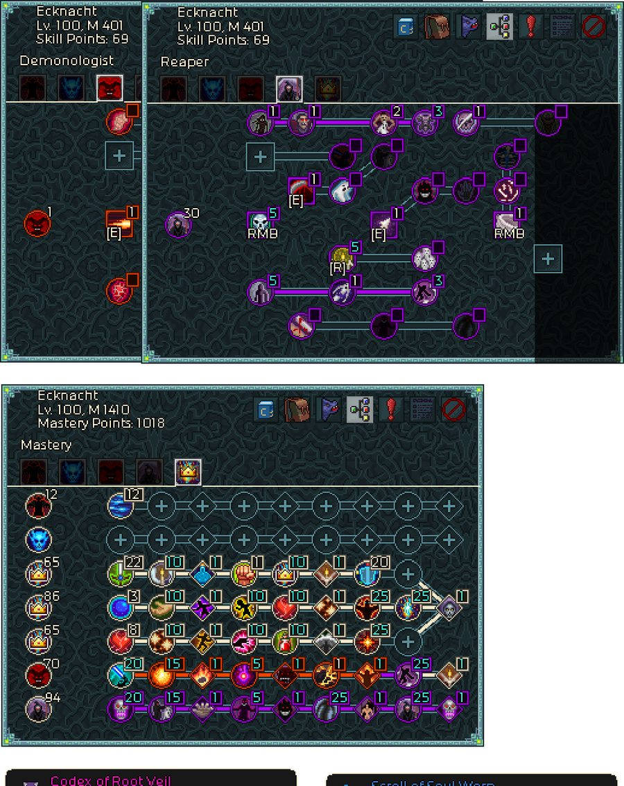

파밍 우선순위, 인챈트 비용 함정, DLC 원정 트리, 완성 트리와 아티팩트 — 레벨링이 끝난 뒤의 워록 운영.
검색 결과가 없습니다.
원저자 Rahlence · 원문 lock_prog.pdf (2026-06-18, 공식 디스코드 #build-forum «Warlock Leveling and Progression», 7쪽) · 레벨링편은 lock_leveling_v3.pdf (2026-06-26)
원문의 지시는 한 문장입니다 — "마스터리나 드랍 말고도 지금 필요한 무언가를 항상 노리면서 돌아라."
| 파밍처 | 목적 |
|---|---|
| 던전 아노말리 Dungeon Anomalies | 아노말리 룬 (클래스 하급 룬 직드랍) |
| 정예 던전 아노말리 Elite Dungeon | 룬스톤 — 제작 룬 재료. 사망 불가 모드입니다 |
| 무작위 아노말리 Random | 단순 노가다 · 상급 강화 재료 수급 |
| 소형 보스 아노말리 Lesser Boss | 프리즈매틱 보석 · 룬로드의 후회 · 프리즈매틱 액체. 마법 발견을 쌓아 두면 진전설 공급원으로도 쓸 만합니다 |
| 대형 보스 아노말리 (신화 XV) Greater Boss | 신화 무기 제작 재료 |
| 무한 던전 아노말리 Endless Dungeon | 황금 크리스탈 — 원정 패시브 강화용 |
아노말리 룬은 40종이 순환으로 보장되기 때문에, 룬을 더 모으고 싶다면 새 캐릭터를 하나 키우는 편이 더 빠를 수 있습니다. 파밍이 아니라 캐릭터 육성이 룬 수급 수단이 되는 드문 구조입니다.
진행 순서 요약: 저항 캡 → 룬(던전) → 룬스톤(정예 던전) → 원정 노드 전부 → 프리즈매틱 보석(소형 보스) → 상급 강화 재료(무작위) → 신화 무기 재료(대형 보스 · 신화 XV) → 황금 크리스탈(무한 던전)
저항 캡이 1순위입니다. 초반에는 가능한 모든 부위에 전 저항 인챈트를 넣고, 거기에 물리 저항 메이저 1개 + 원소별 마이너 1개씩을 더하는 형태가 원문 권장입니다.
Frozen·Poisoned·Static·Plagued·Infernal은 몹의 물리 공격을 그 속성으로 변환합니다. 한 저항만 몰아 올리면 안 되는 이유입니다.
원저자에게 "DLC는 언제 하나?"의 답은 곧 위의 진행 순서입니다. 원정 노드를 전부 열고, 자기 빌드에 좋은 패시브의 랭크를 감당되는 만큼 올리는 것이 축입니다.
문제는 황금 크리스탈입니다. 없을 때와 최대치의 차이가 항목에 따라 2배에서 10배까지 벌어집니다. (원문 표기: "not an exhaustive list" — 전체 목록은 아닙니다)
| 원정 패시브 | 황금 크리스탈 없이 | 최대 | 배수 |
|---|---|---|---|
| 저항 | 8% | 20% | 2.5× |
| 스킬 피해 | 20% | 200% | 10× |
| 체력 | 2,300 | 5,750 | 2.5× |
| 보석 강도 | 6% | 15% | 2.5× |
| 원소 피해 | 20% | 60% | 3× |
| 의식 / 동료 / 유산 / 오라 효과 | 16% | 40% | 2.5× |
| 왕관 적 대상 피해 | 8% | 20% | 2.5× |
| 적중 시 체력 | 21 | 70 | 3.3× |
| 적중 시 마나 | 15 | 50 | 3.3× |
| 클래식 개별 스킬 태그 | 6% | 20% | 3.3× |
| 공용 스킬 태그 | 6% | 15% | 2.5× |
원정 트리를 진행하는 동안에는 처치 축적(kill-hoarder) 계열을 돌리고, 획득 쪽과 피해 쪽 중 자기 체감에 맞는 것을 교체해 쓰라는 것이 원문의 마지막 조언입니다.

| 구분 | 배분 | 비고 |
|---|---|---|
| 수확자 Reaper | 30 | 해골 우클릭(5) · 의식 [R](5) · 두 번째 우클릭(1) · 하단 기둥 노드(5) 등 |
| 악마학자 Demonologist | 1 | [E] 급속 폭사 불꽃 사격 하나뿐 |
| 미사용 스킬 포인트 | 69 | 의도적 — 메건의 불꽃용 |
| 마스터리 (총 392 투자) | 부패자 12 · 리치 0 · 공용 65 / 86 / 65 · 악마학자 70 · 수확자 94 | 미사용 마스터리 포인트 1,018 |
Lv. 100, M 401, 마스터리 캡처는 Lv. 100, M 1410으로 촬영 시점이 다릅니다. 두 배분을 하나의 스냅샷으로 읽지 마세요.
E(급속 폭사 불꽃 사격, flashfire)를 탭해 엘레멘티움 스택을 하나 더 쌓습니다R(의식)을 눌러 피해를 올립니다| 보조 릴릭 | 내용 | 가치 |
|---|---|---|
| 영혼 전송 왜곡 두루마리 Scroll of Soul Warp | 사용: Soul Warp I 시전. 쿨다운이 없고 개수 제한만 있습니다 — 상인에게서 대량 구매해 씁니다 | 1,350 |
| 뿌리 장막의 서책 Codex of Root Veil | 유니크 릴릭 · 사용: Root Veil III 시전 · 쿨다운 5초 | 31,947 |
전부 100레벨이고 고대 야수가 들고 다닙니다(Artifacts are carried by your Ancient Beast). 좌클릭으로 선택, 우클릭으로 해제. 데이터
| 형태 | 아티팩트 | 효과 |
|---|---|---|
| 삼각형 | 자기 장치 Magnetic Device | 획득 반경 +50% |
| 삼각형 | 쌍둥이 The Twins | 체력·마나 획득물이 항상 쌍으로 드랍 |
| 마름모 | 의식석 Ritual Stone | 모든 의식 스킬 +1랭크 |
| 마름모 | 영혼 보석 Soul Gem | 최대 영혼 +1 |
| 별 | 메건의 불꽃 Megan's Spark | 미사용 스킬 포인트 1개당 모든 부 스탯 +1% |
| 별 | 랄렌스의 부활 Rahlence's Resurrection | 처치 시 발동하는 인챈트·파워가 적중 시에도 7% 확률로 발동. 단 패시브 스킬과 적 체력을 피해로 쓰는 효과에는 미적용 |
메건의 불꽃이 스킬 포인트 69개를 남겨 두는 이유입니다. 워록의 의식 의존도를 감안하면 의식석도 사실상 필수 취급이고, 영혼 보석은 워록 전용으로 의미가 있는 유일한 상한 증가 수단입니다.
인젝터/런처는 50레벨 + 영웅 난이도 이상에서만 드랍합니다 데이터. 아래는 원저자의 엔드게임 세팅 그대로입니다.
| 릴릭 | 등급 | 슬롯 / 쿨 | 받는 것 | 보정 | 가치 |
|---|---|---|---|---|---|
| MK 4 영약 주입기 ×2 MK 4 Elixir Injector | 유니크 · 제작 | 3 / 5초 | 영약만 | 슬롯 영약의 효과 +30% · 지속 +30% | 180,000 |
| MK 5 슈퍼 주입기 MK 5 Super Injector | 전설 · 제작 | 4 / 5초 | 물약만 | 물약 효과 +45% · 벨트 슬롯에 있으면 체력이나 마나가 30% 아래로 떨어질 때 자동 발동 | 225,000 |
| MK 5 슈퍼 발사기 MK 5 Super Launcher | 전설 · 제작 | 4 / 3초 | 유리병만 | 사거리 증가 · 모든 유리병을 좁은 부채꼴로 한 번에 투척 · 충돌 반경 +30% | 225,000 |
영약 주입기는 두 개를 나란히 돌려 영약 6종을 동시에 유지합니다. 전부 450초 지속입니다.
| 주입기 | 영약 | 효과 |
|---|---|---|
| A | 제압의 영약 Elixir of Overpower | 제압 +30% |
| A | 상급 피해의 영약 Greater Damage | 피해 +100% |
| A | 획득 강도의 영약 Pickup Strength | 획득 강도 +40% |
| B | 치명타 피해의 영약 Critical Damage | 치명타 피해 +80% |
| B | 공격 속도의 영약 Attack Speed | 공격 속도 +50% |
| B | 획득 반경의 영약 Pickup Radius | 획득 반경 +60% |
| 물약 (MK 5 슈퍼 주입기) | 효과 |
|---|---|
| 숭고한 체력 물약 Sublime Health | 즉시 + 5초에 걸쳐 10,985 회복 |
| 초월 시간 물약 Transcendent Temporal | 보유 중인 스태거 피해의 33% 제거 |
| 초월 재생 물약 Transcendent Restoration | 체력 22% + 마나 22% 즉시 회복 |
| 초월 체력 물약 Transcendent Health | 체력 33% 즉시 회복 |
| 유리병 (MK 5 슈퍼 발사기) | 효과 — 전부 착탄 지점 반경 3m |
|---|---|
| 약화의 유리병 Vial of Weakness | 적이 받는 직접 피해 +50% |
| 암흑 반감의 유리병 Shadow Aversion | 적이 받는 암흑 직접 피해 +20% |
| 번개 작렬의 유리병 Lightning Burst | 번개 200% — 직접 피해로 취급되어 온힛 발동 가능 |
| 신성 작렬의 유리병 Holy Burst | 신성 200% — 마찬가지로 온힛 발동 가능 |
여기까지가 클래스 공통 성장 절차입니다. 실제로 어떤 빌드로 밀지는 목적에 따라 갈립니다 — 레벨링 가이드 작성자의 2026-07 시점 추천은 속도 파밍은 메테오라, 푸시는 저주 모독자입니다.
저주 모독자 · 메테오라 · 데몬 로드 · 태양과 달 화염 태풍
스탯 우선순위 · 캐릭터 복사 도박 · 저레벨 장비 · 해골 연타 트리
영혼 시스템 · 4개 트리 · 강약점
원저자 Rahlence · 원문 lock_prog.pdf (2026-06-18, 공식 디스코드 #build-forum) · 스크린샷 7장(pg_01~pg_07) 전사 기준